About Me
I received my Ph.D. degree from Southern University of Science and Technology (SUSTech) in June 2026, under the supervision of Dr. Weijie Yuan. My research is focused on wireless communications, signal processing, and control, particularly the following topics:
- Integrated sensing and communication (ISAC): beamforming and waveform design ☘️
- OTFS modulation: OTFS-ISAC, precoder design, and delay-Doppler signal processing ☘️
- Non-terrestrial networks and LAWNs: cooperative tracking and communication, joint trajectory design and resource allocation, and low-altitude airspace management ☘️
- Robust control: model predictive control (MPC), networked control systems (NCS), and formation control ☘️
- Optimization: convex and non-convex methods for wireless system design ☘️
For academic collaboration 🤝, please feel free to contact me at wuj2021@mail.sustech.edu.cn 📩.
Personal Experience
I received my B.E. degree from Southwest Jiaotong University, Chengdu, China, in 2021, and my Ph.D. degree from Southern University of Science and Technology, Shenzhen, China, in 2026, supervised by Dr. Weijie Yuan.
From July to September 2023, I was a Visiting Student at Xi'an Jiaotong University, supervised by Prof. Zhiqiang Wei. From June to September 2025, I was a Visiting Student at Sungkyunkwan University, Suwon, South Korea, supervised by Prof. Dong In Kim, IEEE Life Fellow.
My work spans ISAC signal processing, OTFS precoding, cooperative sensing, and the joint design of communication and control for UAV networks. My first-author publications appear in IEEE JSAC, IEEE TWC, IEEE TMC, IEEE TVT, IEEE IoT Journal, IEEE Wireless Communications, China Communications, and Chinese Journal of Aeronautics.
My honors include the IEEE ISWCS and IEEE WCNC Best Paper Awards in 2026, the IEEE Transactions on Mobile Computing Best Paper Award and Radar Journal Annual Excellent Paper Award in 2025, the Chinese National Scholarship and BYD Scholarship in 2025, and the IEEE TGCN Exemplary Reviewer recognition in 2022.
📖 Educations
- 2021.09 – 2026.06, Ph.D., Southern University of Science and Technology, Shenzhen, China.
Supervisor: Dr. Weijie Yuan. GPA: 3.4/4.0. - 2017.09 – 2021.06, B.E., Southwest Jiaotong University, Chengdu, China.
GPA: 3.42/4.0.
🌏 Visiting Appointments
- 2025.06 – 2025.09, Visiting Student, Sungkyunkwan University, Suwon, South Korea.
Supervisor: Prof. Dong In Kim, IEEE Life Fellow. - 2023.07 – 2023.09, Visiting Student, Xi'an Jiaotong University, Xi'an, China.
Supervisor: Prof. Zhiqiang Wei.
🔥 News
- 2026.06 — I received my Ph.D. degree from Southern University of Science and Technology! 🎓
- 2026 — Received the IEEE WCNC Best Paper Award. 🏆
- 2026 — Received the IEEE ISWCS Best Paper Award. 🏆
- 2026 — Our papers on SWIPT-enabled LAWNs and control-aware UAV formations appear in IEEE JSAC.
- 2026 — Our comprehensive survey of low-altitude wireless networks appears in China Communications.
- 2025 — Visited Sungkyunkwan University, working with Prof. Dong In Kim.
- 2025 — Received the Chinese National Scholarship and BYD Scholarship. 🎉
- 2025 — Our work on co-design of sensing, communications, and control received the IEEE Transactions on Mobile Computing Best Paper Award. 🏆
- 2025 — Our SDR-based OTFS-ISAC environment sensing work appears in IEEE TMC.
🎖️ Honors and Awards
- IEEE ISWCS Best Paper Award, 2026 🏆
- IEEE WCNC Best Paper Award, 2026 🏆
- IEEE Transactions on Mobile Computing Best Paper Award, 2025 🏆
For Co-Design of Sensing, Communications, and Control for Low-Altitude Wireless Networks. - Radar Journal Annual Excellent Paper Award, 2025 🏆
- Chinese National Scholarship, 2025 🎓
- BYD Scholarship, 2025 🎓
- IEEE TGCN Exemplary Reviewer, 2022 🌟
🗓️ Invited Events
- 2026, IEEE WCNC Tutorial: Multi-Layer Non-Terrestrial Networks: From LEO Satellite Constellations to Low-Altitude Wireless Networks.
📝 Publications
🖊️ First-Author Journals:
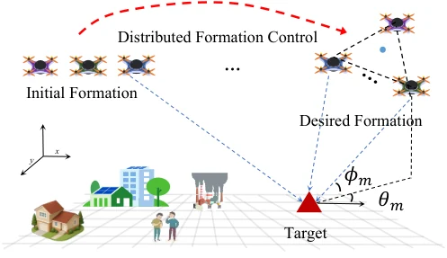
[10] Formation Control for CRLB-Optimal Cooperative Sensing in Low-Altitude Wireless Networks
- Abstract (summary):
Read more
This paper asks which UAV formation geometry gives the most accurate cooperative target localization. Starting from range measurements, it derives a Fisher-information model and minimizes the trace of the position-estimation bound. The analysis relates the optimal arrangement to isotropic horizontal information and a regular polygon, with elevation governed by propagation loss and geometric diversity. A distributed controller then brings UAVs toward this configuration while accommodating formation movement and obstacles. Simulations compare localization bounds and convergence against alternative formations.
View the published paper → - Citation: J. Wu, H. Jin, N. Su, J. Li, H. Pan, T.-T. Chan, “Formation Control for CRLB-Optimal Cooperative Sensing in Low-Altitude Wireless Networks,” IEEE Transactions on Vehicular Technology, pp. 1–6, early access, 2026. DOI: 10.1109/tvt.2026.3743628.
BibTeX
@article{wu2026_formation_control,
author = {Jun Wu and Haijia Jin and Nanchi Su and Jinna Li and Haoyuan Pan and Tse-Tin Chan},
title = {{Formation Control for CRLB-Optimal Cooperative Sensing in Low-Altitude Wireless Networks}},
journal = {IEEE Transactions on Vehicular Technology},
year = {2026},
pages = {1--6},
doi = {10.1109/tvt.2026.3743628},
url = {https://doi.org/10.1109/tvt.2026.3743628},
note = {Early access}
}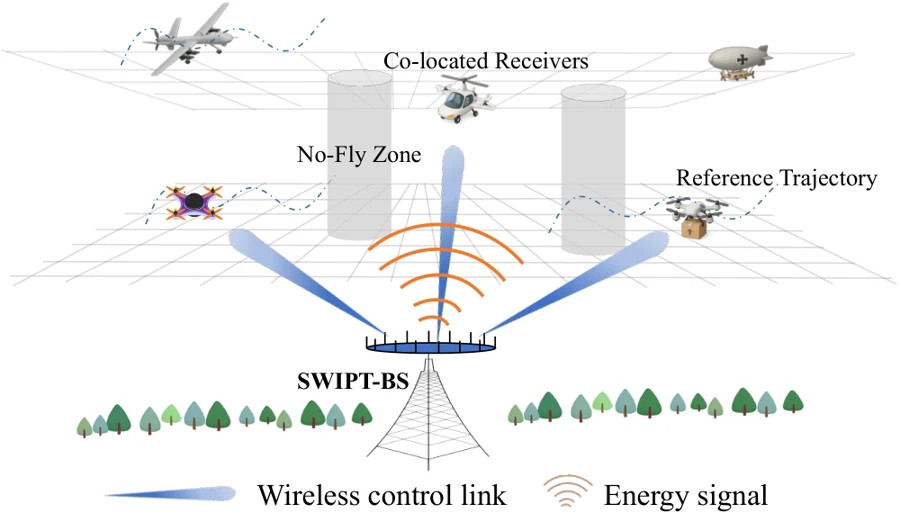
[9] LAWNs Meet SWIPT: Beamforming and Power Splitting Optimization for Predictive Control
- Abstract (summary):
Read more
A multi-antenna base station sends both control commands and energy to aerial vehicles, which divide received power between information decoding and energy harvesting. The design must maintain accurate flight-path tracking while avoiding moving no-fly zones. Stream-function planning first constructs safe reference paths; model predictive control then determines the control inputs. Beamformers and receiver power-splitting ratios are optimized together using successive convex approximation and semidefinite relaxation. The study analyzes the tightness of the relaxation and evaluates the resulting balance between tracking accuracy and harvested energy.
View the published paper → - Citation: J. Wu, W. Liu, W. Yuan, N. Su, “LAWNs Meet SWIPT: Beamforming and Power Splitting Optimization for Predictive Control,” IEEE Journal on Selected Areas in Communications, vol. 44, pp. 4968–4981, 2026. DOI: 10.1109/jsac.2026.3701349.
BibTeX
@article{wu2026_lawns_swipt,
author = {Jun Wu and Wenchao Liu and Weijie Yuan and Nanchi Su},
title = {{LAWNs Meet SWIPT: Beamforming and Power Splitting Optimization for Predictive Control}},
journal = {IEEE Journal on Selected Areas in Communications},
year = {2026},
volume = {44},
pages = {4968--4981},
doi = {10.1109/jsac.2026.3701349},
url = {https://doi.org/10.1109/jsac.2026.3701349}
}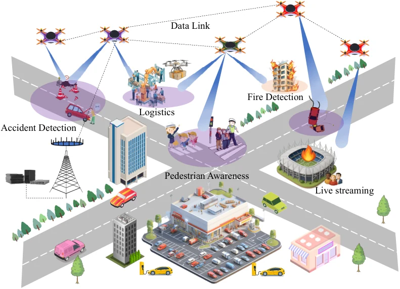
[8] Toward Multi-Functional LAWNs With ISAC: Opportunities, Challenges, and the Road Ahead
- Abstract (summary):
Read more
This article examines how ISAC can support low-altitude networks at both the individual-node and cooperative-network levels. It discusses the gains and trade-offs associated with hierarchical integration, then broadens the architecture to include remote control, edge computation, wireless energy delivery, and language-model-based intelligence. A case study illustrates the benefits of combining these functions. The resulting framework identifies opportunities and open design questions for aerial networks that must support more than data transmission alone.
View the published paper → - Citation: J. Wu, W. Yuan, X. Zhang, Y. Yu, Y. Cui, F. Liu, G. Sun, J. Wang, D. Niyato, D. I. Kim, “Toward Multi-Functional LAWNs With ISAC: Opportunities, Challenges, and the Road Ahead,” IEEE Wireless Communications, pp. 1–8, early access, 2026. DOI: 10.1109/mwc.2026.3672360.
BibTeX
@article{wu2026_multifunctional_lawns,
author = {Jun Wu and Weijie Yuan and Xiaoqi Zhang and Yaohuan Yu and Yuanhao Cui and Fan Liu and Geng Sun and Jiacheng Wang and Dusit Niyato and Dong In Kim},
title = {{Toward Multi-Functional LAWNs With ISAC: Opportunities, Challenges, and the Road Ahead}},
journal = {IEEE Wireless Communications},
year = {2026},
pages = {1--8},
doi = {10.1109/mwc.2026.3672360},
url = {https://doi.org/10.1109/mwc.2026.3672360},
note = {Early access}
}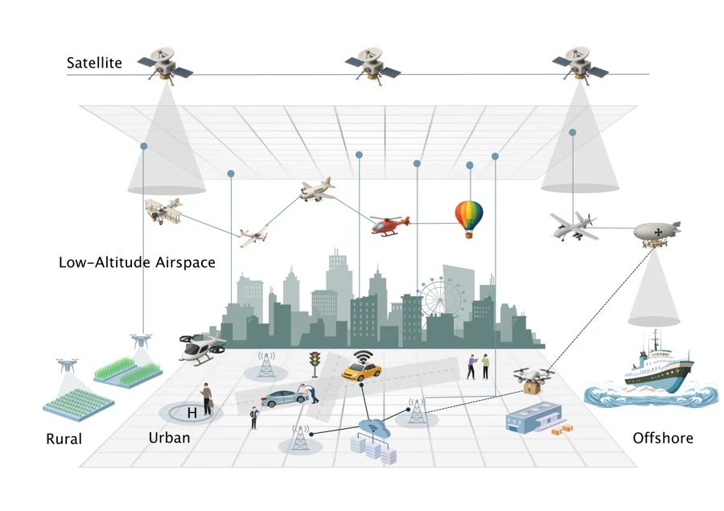
[7] Low-altitude wireless networks: A comprehensive survey
- Abstract (summary):
Read more
This survey treats the low-altitude wireless network as a shared infrastructure for communication, sensing, computation, control, and energy delivery. It reviews network fundamentals and the development of these functions, then examines the metrics needed to evaluate their performance. Privacy and security are considered alongside the practical challenges of organizing three-dimensional airspace and managing aerial traffic. By connecting wireless-system design with airspace operations, the article maps the technical issues that arise when moving from isolated drone links to large-scale low-altitude services.
View the published paper → - Citation: J. Wu, Y. Yang, W. Yuan, W. Liu, J. Wang, T. Mao, L. Zhou, Y. Cui, F. Liu, G. Sun, Y. Ma, N. Wu, D. Zheng, J. Xu, N. Ma, Z. Feng, W. Xu, D. Niyato, C. Yuen, X. Jing, Z. Shi, B. Ai, S. Jin, D. I. Kim, J. Wang, P. Zhang, H. Yin, J. Zhang, “Low-altitude wireless networks: A comprehensive survey,” China Communications, vol. 23, no. 3, pp. 99–141, 2026. DOI: 10.23919/jcc.fa.2025-0429.202603.
BibTeX
@article{wu2026_lawn_survey,
author = {Jun Wu and Yaoqi Yang and Weijie Yuan and Wenchao Liu and Jiacheng Wang and Tianqi Mao and Lin Zhou and Yuanhao Cui and Fan Liu and Geng Sun and Yiyan Ma and Nan Wu and Dezhi Zheng and Jindan Xu and Nan Ma and Zhiyong Feng and Wei Xu and Dusit Niyato and Chau Yuen and Xiaojun Jing and Zhiguo Shi and Bo Ai and Shi Jin and Dong In Kim and Jiangzhou Wang and Ping Zhang and Hao Yin and Jun Zhang},
title = {{Low-altitude wireless networks: A comprehensive survey}},
journal = {China Communications},
year = {2026},
volume = {23},
number = {3},
pages = {99--141},
doi = {10.23919/jcc.fa.2025-0429.202603},
url = {https://doi.org/10.23919/jcc.fa.2025-0429.202603}
}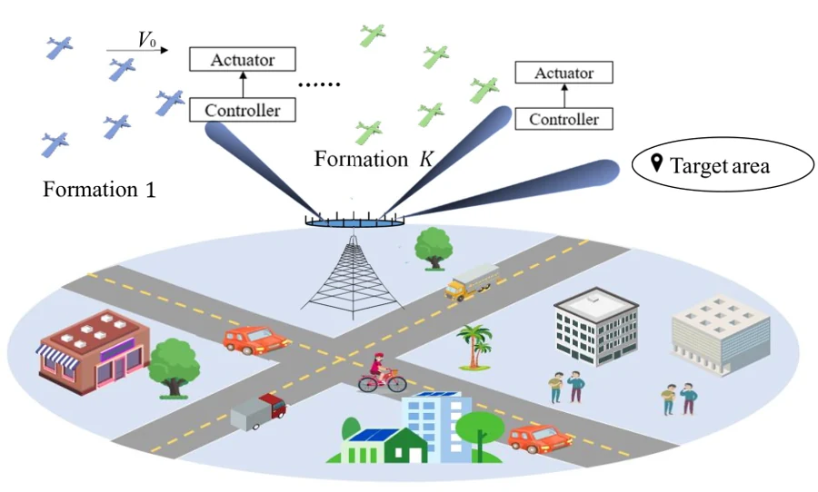
[6] Toward Dual-Functional LAWN: Control-Aware System Design for Aerodynamics-Aided UAV Formations
🚀 ESI Highly Cited Paper
- Abstract (summary):
Read more
This work connects aerodynamic energy savings with the wireless control of UAV formations. A ground station uses a shared ISAC transmission to guide multiple formations and monitor a target region. A distributed diffusion-LMS procedure lets neighboring UAVs cooperate to form an energy-saving configuration. The beamformer is then designed around the worst control cost, subject to transmit-power and sensing requirements. A combination of successive convex approximation and semidefinite relaxation handles the coupled optimization. Simulations examine how formation geometry and radio-resource design jointly affect energy consumption and control performance.
View the published paper → - Citation: J. Wu, W. Yuan, Q. Cheng, H. Jin, “Toward Dual-Functional LAWN: Control-Aware System Design for Aerodynamics-Aided UAV Formations,” IEEE Journal on Selected Areas in Communications, vol. 44, pp. 791–804, 2026. DOI: 10.1109/jsac.2025.3608746.
BibTeX
@article{wu2026_dual_functional_lawn,
author = {Jun Wu and Weijie Yuan and Qingqing Cheng and Haijia Jin},
title = {{Toward Dual-Functional LAWN: Control-Aware System Design for Aerodynamics-Aided UAV Formations}},
journal = {IEEE Journal on Selected Areas in Communications},
year = {2026},
volume = {44},
pages = {791--804},
doi = {10.1109/jsac.2025.3608746},
url = {https://doi.org/10.1109/jsac.2025.3608746}
}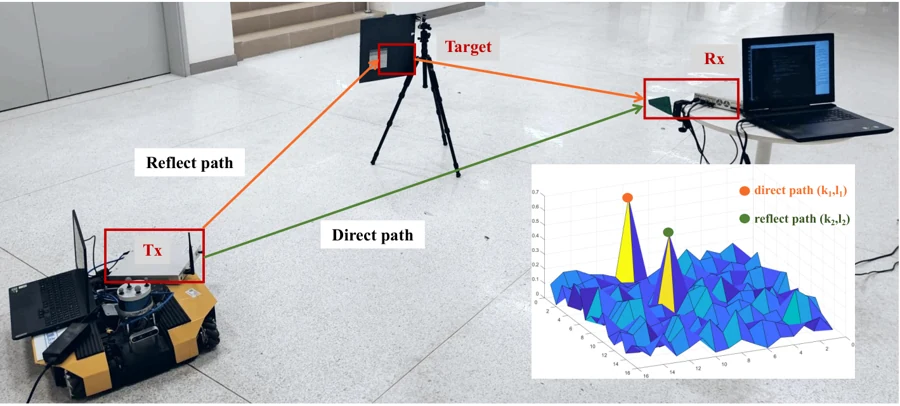
[5] SDR-Empowered Environment Sensing Design and Experimental Validation Using OTFS-ISAC Signals
- Abstract (summary):
Read more
This work takes OTFS-based environment sensing from signal processing to a physical radio experiment. It combines delay-Doppler channel estimation, target localization, and transmitter-velocity estimation in one framework. Fractional delay and Doppler shifts are included in the channel model, and a three-ellipse localization method turns the estimated channel parameters into spatial information. A software-defined radio testbed built with USRP hardware is used alongside simulations to evaluate the design. The experiments compare localization and velocity-estimation accuracy with benchmark approaches.
View the published paper → - Citation: J. Wu, Y. Shi, W. Yuan, Q. Cheng, B. Li, X. Wei, “SDR-Empowered Environment Sensing Design and Experimental Validation Using OTFS-ISAC Signals,” IEEE Transactions on Mobile Computing, vol. 24, no. 11, pp. 12252–12263, 2025. DOI: 10.1109/tmc.2025.3581716.
BibTeX
@article{wu2025_sdr_otfs_isac,
author = {Jun Wu and Yuye Shi and Weijie Yuan and Qingqing Cheng and Buyi Li and Xinyuan Wei},
title = {{SDR-Empowered Environment Sensing Design and Experimental Validation Using OTFS-ISAC Signals}},
journal = {IEEE Transactions on Mobile Computing},
year = {2025},
volume = {24},
number = {11},
pages = {12252--12263},
doi = {10.1109/tmc.2025.3581716},
url = {https://doi.org/10.1109/tmc.2025.3581716}
}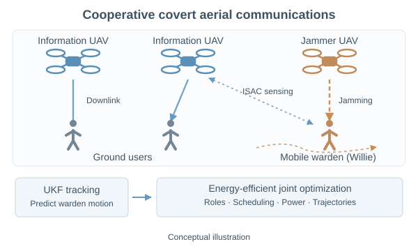
Conceptual illustration[4] Aerial-networked ISAC-empowered collaborative energy-efficient covert communications
- Abstract (summary):
Read more
This study combines cooperative aerial sensing with covert communication. Networked UAVs take either information-transmission or jamming roles, while delay and Doppler measurements help an unscented Kalman filter track a moving warden. The design jointly selects jammers, schedules users, allocates transmit power, and plans UAV trajectories. Its objective is energy-efficient downlink communication subject to covertness and power requirements. The framework shows how sensing information and cooperation between UAVs can inform decisions about when, where, and how to transmit.
View the published paper → - Citation: J. Wu, W. Yuan, Q. Tao, H. Huang, D. W. K. Ng, “Aerial-networked ISAC-empowered collaborative energy-efficient covert communications,” Chinese Journal of Aeronautics, vol. 38, no. 10, Art. no. 103451, 2025. DOI: 10.1016/j.cja.2025.103451.
BibTeX
@article{wu2025_aerial_covert,
author = {Jun Wu and Weijie Yuan and Qin Tao and Hongjia Huang and Derrick Wing Kwan Ng},
title = {{Aerial-networked ISAC-empowered collaborative energy-efficient covert communications}},
journal = {Chinese Journal of Aeronautics},
year = {2025},
volume = {38},
number = {10},
doi = {10.1016/j.cja.2025.103451},
url = {https://doi.org/10.1016/j.cja.2025.103451},
note = {Article 103451}
}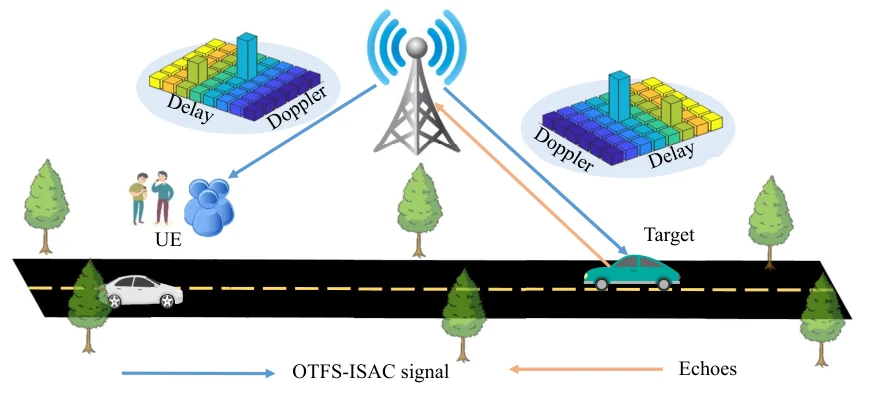
[3] Low-Complexity Minimum BER Precoder Design for ISAC Systems: A Delay-Doppler Perspective
- Abstract (summary):
Read more
How should an OTFS transmitter shape its signal when both reliable data delivery and accurate sensing matter? This paper designs a precoder directly in the delay-Doppler domain, taking advantage of the sparse, slowly varying equivalent channel. The objective minimizes a bound on average bit error rate while meeting transmit-power and sensing constraints. Singular value decomposition separates the design into smaller problems, and a dual optimization method provides a low-complexity solution. The analysis includes feasibility conditions and illustrates the trade-offs among sensing quality, communication reliability, and transmission efficiency.
View the published paper → - Citation: J. Wu, W. Yuan, Z. Wei, K. Zhang, F. Liu, D. W. K. Ng, “Low-Complexity Minimum BER Precoder Design for ISAC Systems: A Delay-Doppler Perspective,” IEEE Transactions on Wireless Communications, vol. 24, no. 2, pp. 1526–1540, 2025. DOI: 10.1109/twc.2024.3509973.
BibTeX
@article{wu2025_minimum_ber,
author = {Jun Wu and Weijie Yuan and Zhiqiang Wei and Kecheng Zhang and Fan Liu and Derrick Wing Kwan Ng},
title = {{Low-Complexity Minimum BER Precoder Design for ISAC Systems: A Delay-Doppler Perspective}},
journal = {IEEE Transactions on Wireless Communications},
year = {2025},
volume = {24},
number = {2},
pages = {1526--1540},
doi = {10.1109/twc.2024.3509973},
url = {https://doi.org/10.1109/twc.2024.3509973}
}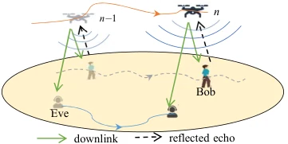
[2] When UAVs Meet ISAC: Real-Time Trajectory Design for Secure Communications
- Abstract (summary):
Read more
This paper uses sensing feedback to guide a UAV that communicates securely with a moving ground user. Echo-delay observations feed an extended Kalman filter, allowing the UAV to estimate and predict the legitimate user’s changing location. The flight trajectory is updated to improve the instantaneous secrecy rate in the presence of an eavesdropper following a known path. An iterative optimizer addresses the resulting non-convex design. Numerical experiments assess tracking accuracy and the balance between useful transmission and information leakage.
View the published paper → - Citation: J. Wu, W. Yuan, L. Hanzo, “When UAVs Meet ISAC: Real-Time Trajectory Design for Secure Communications,” IEEE Transactions on Vehicular Technology, vol. 72, no. 12, pp. 16766–16771, 2023. DOI: 10.1109/tvt.2023.3290033.
BibTeX
@article{wu2023_uav_isac_security,
author = {Jun Wu and Weijie Yuan and Lajos Hanzo},
title = {{When UAVs Meet ISAC: Real-Time Trajectory Design for Secure Communications}},
journal = {IEEE Transactions on Vehicular Technology},
year = {2023},
volume = {72},
number = {12},
pages = {16766--16771},
doi = {10.1109/tvt.2023.3290033},
url = {https://doi.org/10.1109/tvt.2023.3290033}
}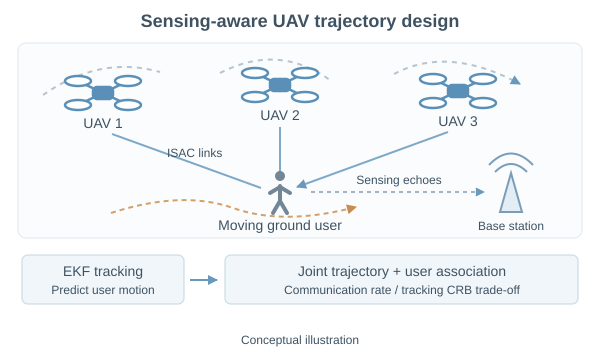
Conceptual illustration[1] On the Interplay Between Sensing and Communications for UAV Trajectory Design
- Abstract (summary):
Read more
A group of UAVs simultaneously communicates with and senses moving ground users. This work jointly designs flight trajectories and user association, balancing downlink throughput against tracking accuracy. Range information extracted from sensing echoes supports extended-Kalman-filter prediction and tracking. An alternating optimization method, using successive convex approximation, coordinates the trajectory and association decisions under flight, power, and collision-avoidance constraints. The study makes the sensing–communication trade-off explicit through communication-rate and Cramér–Rao-bound objectives.
View the published paper → - Citation: J. Wu, W. Yuan, L. Bai, “On the Interplay Between Sensing and Communications for UAV Trajectory Design,” IEEE Internet of Things Journal, vol. 10, no. 23, pp. 20383–20395, 2023. DOI: 10.1109/jiot.2023.3287991.
BibTeX
@article{wu2023_sensing_communication_interplay,
author = {Jun Wu and Weijie Yuan and Lin Bai},
title = {{On the Interplay Between Sensing and Communications for UAV Trajectory Design}},
journal = {IEEE Internet of Things Journal},
year = {2023},
volume = {10},
number = {23},
pages = {20383--20395},
doi = {10.1109/jiot.2023.3287991},
url = {https://doi.org/10.1109/jiot.2023.3287991}
}🀄 First-Author Conferences:
[4] Control-Driven ISAC Beamforming Design for Low-Altitude Wireless Networks
- Research topic:
Read more
Control-driven beamforming design for integrated sensing and communication in low-altitude wireless networks.
View the published paper → - Citation: J. Wu, X. Cao, Q. Cheng, S. Lu, S. Xia, Z. Wang, “Control-Driven ISAC Beamforming Design for Low-Altitude Wireless Networks,” 2025 IEEE Globecom Workshops (GC Wkshps), pp. 1322–1326, 2025. DOI: 10.1109/gcwkshps68340.2025.11590903.
BibTeX
@inproceedings{wu2025_publication_14,
author = {Jun Wu and Xiaowen Cao and Qingqing Cheng and Shihang Lu and Shuqiang Xia and Zhongbin Wang},
title = {{Control-Driven ISAC Beamforming Design for Low-Altitude Wireless Networks}},
booktitle = {2025 IEEE Globecom Workshops (GC Wkshps)},
year = {2025},
pages = {1322--1326},
doi = {10.1109/gcwkshps68340.2025.11590903},
url = {https://doi.org/10.1109/gcwkshps68340.2025.11590903}
}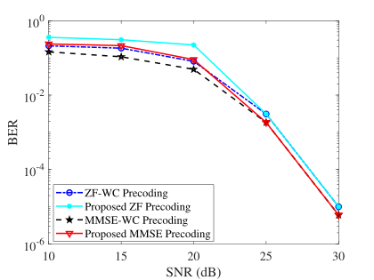
[3] Optimal BER Minimum Precoder Design for OTFS-Based ISAC Systems
Invited Paper
- Abstract (summary):
Read more
This conference paper formulates OTFS precoding in the delay-Doppler domain to improve communication reliability while satisfying sensing and transmit-power requirements. It works with a bound on average bit error rate and develops an iterative dual optimization procedure. Numerical comparisons illustrate the resulting relationship between sensing accuracy and reliable data transmission.
View the published paper → - Citation: J. Wu, W. Yuan, Z. Wei, J. Yan, D. W. K. Ng, “Optimal BER Minimum Precoder Design for OTFS-Based ISAC Systems,” ICASSP 2024 - 2024 IEEE International Conference on Acoustics, Speech and Signal Processing (ICASSP), pp. 12966–12970, 2024. DOI: 10.1109/icassp48485.2024.10446140.
BibTeX
@inproceedings{wu2024_publication_13,
author = {Jun Wu and Weijie Yuan and Zhiqiang Wei and Jinjin Yan and Derrick Wing Kwan Ng},
title = {{Optimal BER Minimum Precoder Design for OTFS-Based ISAC Systems}},
booktitle = {ICASSP 2024 - 2024 IEEE International Conference on Acoustics, Speech and Signal Processing (ICASSP)},
year = {2024},
pages = {12966--12970},
doi = {10.1109/icassp48485.2024.10446140},
url = {https://doi.org/10.1109/icassp48485.2024.10446140}
}[2] Multi-UAV Enabled Sensing: Cramér-Rao Bound Optimization
- Research topic:
- Citation: J. Wu, W. Yuan, L. Bai, “Multi-UAV Enabled Sensing: Cramér-Rao Bound Optimization,” 2023 IEEE International Conference on Communications Workshops (ICC Workshops), pp. 925–930, 2023. DOI: 10.1109/iccworkshops57953.2023.10283770.
BibTeX
@inproceedings{wu2023_publication_12,
author = {Jun Wu and Weijie Yuan and Lin Bai},
title = {{Multi-UAV Enabled Sensing: Cramér-Rao Bound Optimization}},
booktitle = {2023 IEEE International Conference on Communications Workshops (ICC Workshops)},
year = {2023},
pages = {925--930},
doi = {10.1109/iccworkshops57953.2023.10283770},
url = {https://doi.org/10.1109/iccworkshops57953.2023.10283770}
}[1] UAV-Based Target Tracking: Integrating Sensing into Communication Signals
- Research topic:
Read more
UAV-based target tracking through sensing integrated into communication signals.
View the published paper → - Citation: J. Wu, W. Yuan, F. Liu, Y. Cui, X. Meng, H. Huang, “UAV-Based Target Tracking: Integrating Sensing into Communication Signals,” 2022 IEEE/CIC International Conference on Communications in China (ICCC Workshops), pp. 309–313, 2022. DOI: 10.1109/icccworkshops55477.2022.9896671.
BibTeX
@inproceedings{wu2022_publication_11,
author = {Jun Wu and Weijie Yuan and Fan Liu and Yuanhao Cui and Xiao Meng and Hongjia Huang},
title = {{UAV-Based Target Tracking: Integrating Sensing into Communication Signals}},
booktitle = {2022 IEEE/CIC International Conference on Communications in China (ICCC Workshops)},
year = {2022},
pages = {309--313},
doi = {10.1109/icccworkshops55477.2022.9896671},
url = {https://doi.org/10.1109/icccworkshops55477.2022.9896671}
}📄 First-Author Manuscripts Under Review:
Manuscripts listed as under review in my CV.
- J. Wu et al., “Integrating Sensing into Covert Communications: Opportunities and Challenges.” Submitted to IEEE Wireless Communications. Under review.
- J. Wu et al., “Beamforming Design for Trustworthy UAV-ISAC Networks with Mission Privacy and Directional Deception.” Submitted to IEEE Journal of Selected Topics in Signal Processing. Under review.
👨👩👧👦 Collaborated Journals:
- IEEE TMC 2026 H. Jin, J. Wu, W. Yuan, R. Ruan, J. Wang, D. Niyato, D. I. Kim, A. Jamalipour, “Predictive Control Over Low-Altitude Wireless Networks: Joint Trajectory Design and Resource Allocation,” IEEE Transactions on Mobile Computing, vol. 25, no. 8, pp. 12027–12040, 2026.
- IEEE WCL 2026 H. Jin, J. Wu, W. Yuan, “MPC-Based Path Tracking and Power Allocation for WNCS: An Outage Probability Perspective,” IEEE Wireless Communications Letters, vol. 15, pp. 340–344, 2026.
- IEEE JSAC 2026 N. Wu, J. Wu, W. Yuan, R. Chong, M. Matthaiou, “SAGIN-Oriented Covert Communications: Joint Robust Beamforming and Coverage Optimization,” IEEE Journal on Selected Areas in Communications, vol. 44, pp. 1903–1915, 2026.
- npj Wireless Technol. 2026 H. Jin, W. Yuan, J. Wu, J. Wang, D. Niyato, X. Wang, G. K. Karagiannidis, Z. Lin, Y. Gong, D. I. Kim, A. Petropulu, M. S. Greco, A. Jamalipour, S. Sun, “Advancing the control of low-altitude wireless networks: architecture, design principles, and future directions,” npj Wireless Technology, vol. 2, no. 1, Art. no. 2, 2026.
- IEEE Network 2026 D. He, W. Yuan, J. Wu, R. Liu, “Ubiquitous UAV Communication Enabled Low-Altitude Economy: Applications, Techniques, and 3GPP’s Efforts,” IEEE Network, vol. 40, no. 1, pp. 115–122, 2026. 🔥 ESI Hot Paper
- IEEE TCCN 2026 H. Jin, X. Zhang, W. Yuan, J. Wang, J. Wu, X. Wang, R. Tafazolli, M.-S. Alouini, S. Sun, S. Yu, D. I. Kim, A. Jamalipour, X. Shen, “Agentic Low-Altitude Wireless Networks: Fundamentals, Design, and Future Directions,” IEEE Transactions on Cognitive Communications and Networking, vol. 12, pp. 12543–12566, 2026.
- IEEE TCCN 2026 X. Niu, W. Yuan, L. Tan, J. Wu, X. Wang, “Toward Intelligent IoT Services: A Generative AI-Assisted Semantic-Aware Framework,” IEEE Transactions on Cognitive Communications and Networking, vol. 12, pp. 6988–7000, 2026.
- IEEE TMC 2025 H. Jin, J. Wu, W. Yuan, F. Liu, Y. Cui, “Co-Design of Sensing, Communications, and Control for Low-Altitude Wireless Networks,” IEEE Transactions on Mobile Computing, vol. 24, no. 11, pp. 12035–12048, 2025. IEEE Transactions on Mobile Computing Best Paper Award, 2025
- IEEE OJVT 2025 Y. Liu, X. Zhang, J. Wu, Q. Cheng, “OTFS-Assisted Sensing Adaptive Cruise Control for Highways: A Reinforcement Learning Approach,” IEEE Open Journal of Vehicular Technology, vol. 6, pp. 1861–1871, 2025.
- IEEE TVT 2025 X. Niu, L. Tan, J. Wu, W. Yuan, T. Q. S. Quek, “Multimodal-Oriented Interactive Joint Source-Channel Coding for Lightweight Semantic Communication,” IEEE Transactions on Vehicular Technology, vol. 74, no. 10, pp. 16516–16520, 2025.
- IEEE IoTJ 2025 Z. Yan, W. Yuan, X. Zhang, C. Liu, J. Wu, T. Q. S. Quek, “Deep-Learning-Based Compensation Mechanism for UAV Sensing via OTFS Signaling,” IEEE Internet of Things Journal, vol. 12, no. 15, pp. 29797–29810, 2025.
- IEEE JSAS 2024 K. Zhang, J. Wu, F. Dong, S. Lu, X. Li, W. Yuan, “Joint Design of Receiving Filters and Complementary set of Sequences for ISAC With Sidelobe Level Suppression,” IEEE Journal of Selected Areas in Sensors, vol. 1, pp. 211–223, 2024.
- IEEE JSTSP 2024 X. Zhang, W. Yuan, C. Liu, J. Wu, D. W. K. Ng, “Predictive Beamforming for Vehicles With Complex Behaviors in ISAC Systems: A Deep Learning Approach,” IEEE Journal of Selected Topics in Signal Processing, vol. 18, no. 5, pp. 828–841, 2024.
- IEEE IoTJ 2023 Z. Li, W. Yuan, B. Li, J. Wu, C. You, F. Meng, “Reconfigurable-Intelligent-Surface-Aided OTFS: Transmission Scheme and Channel Estimation,” IEEE Internet of Things Journal, vol. 10, no. 22, pp. 19518–19532, 2023.
👣 Collaborated Conferences:
- IEEE WCNC 2025 H. Jin, J. Wu, W. Yuan, Y. Shi, F. Liu, L. Zheng, Y. Gong, “OTFS-Assisted Wireless Control in UAV Networks with Finite Blocklength Transmission,” 2025 IEEE Wireless Communications and Networking Conference (WCNC), pp. 01–06, 2025.
- IEEE ICCC Wkshps 2025 X. Niu, W. Yuan, L. Tan, J. Wu, “ISCS: An Interactive Multimodal Semantic Communication Architecture,” 2025 IEEE/CIC International Conference on Communications in China (ICCC Workshops), pp. 1–6, 2025.
- IEEE WCNC 2024 Y. Liu, Y. Shi, X. Zhang, J. Wu, S. Yang, “Reinforcement Learning-Based Car-Following Control for Autonomous Vehicles with OTFS,” 2024 IEEE Wireless Communications and Networking Conference (WCNC), pp. 1–6, 2024.
- IEEE SPAWC 2023 X. Zhang, W. Yuan, C. Liu, J. Wu, Z. Li, “Deep Learning-Based Cramér-Rao Bound Optimization for Integrated Sensing and Communication in Vehicular Networks,” 2023 IEEE 24th International Workshop on Signal Processing Advances in Wireless Communications (SPAWC), pp. 646–650, 2023.
For further updates, visit Google Scholar, IEEE Xplore, or ORCID. Download BibTeX.
🤝 Academic Service
Conference Organization
- Conference Track Chair, IEEE ISWCS 2026.
- Workshop TPC Co-Chair, IEEE WCNC 2026 1st Workshop on Low-Altitude Wireless Networks.
Technical Working Group
- Member, IEEE AESS Low-Altitude Wireless Networks Technical Working Group.
Reviewer
- IEEE Transactions on Wireless Communications (TWC)
- IEEE Transactions on Vehicular Technology (TVT)
- IEEE Communications Magazine
- IEEE Journal on Selected Areas in Communications (JSAC)
- IEEE Communications Letters
- IEEE Transactions on Mobile Computing (TMC)
Associate Editor
- Journal of Advanced Signal Processing.
Technical Program Committee
- IEEE ICC, IEEE GLOBECOM, IEEE WCNC, and IEEE VTC.
Teaching Assistant
- Signals and Systems; Signal Detection and Estimation.